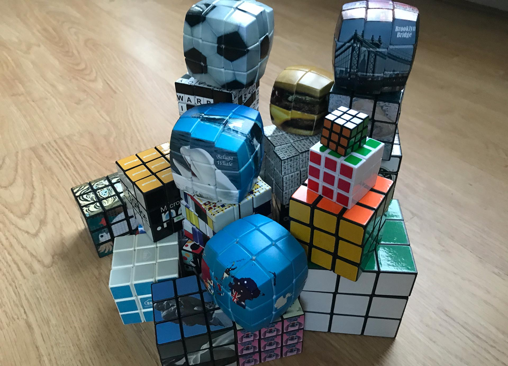

Eindopdracht
Er zijn 3 opdrachten waar je uit kunt kiezen:
- CSS Zen Garden - 2021 version
- Maak een 3D Rubrik's kubus
- Doe een eigen voorstel
CSS Zen Garden - 2021 version
CSS Zen Garden was 20 jaar geleden een initiatief om mogelijkheden van CSS te exploreren: hoe kun je CSS inzetten om vaststaande HTML om te toveren tot toen een visueel meesterwerk. Aan jou dezelfde taak, maar dan anno nu.
meer
Het startpunt
Selecteer je HTML:
- Responsive restaurant menu (de ruwe html)
- Responsive art-direction voor een pagina in een digitaal tijdschrift (de ruwe html)
Voeg een context toe
Houd rekening met i.i.g. één van de volgende contexten:
- print-stylesheet
- prefers-reduced-motion
- prefers-color-scheme
- input type (pointer)
- kies er zelf één
Kies twee eisen
Laat je inspireren door je te houden aan minimaal twee eisen:
- SVG toepassen in shapes, masks én filters
- Twee kleuren
- Geen vierkanten, rechthoeken, cirkels en driehoeken
- Voldoen aan Level AAA van de WCAG.
- Responsive zonder media queries
- Extreme optimalisatie (voldaan indien meer dan 73% minder Kb)
De Selector First CSS & No JS aanpak
-
Het eerste uitgangspunt is dat je geen ID's en classes gebruikt. Niet omdat ze niet nuttig zijn, maar om te oefenen met de vele CSS selectoren die je tot je beschikking hebt. ID's mag je alleen gebruiken om de :target selector te triggeren. En als het echt echt echt niet anders kan, heb je permissie om een paar classes toe te voegen.
-
Een tweede uitgangspunt is dat je geen JS gebruikt (i.i.g. zo min mogelijk - het vak heet niet voor niets CSS to the Rescue). Wat met CSS en/of HTML kan, mag je niet met JS realiseren en het is niet toegestaan om CSS properties met JS aan te passen. We vinden het daarentegen wel interessant dat je verkent waar JS en CSS elkaar raken en versterken, bijv. het uitlezen en aanpassen van CSS custom properties, of bijv. de animationstart, animationcancel, animationiteration en animationend events gebruiken.
Laat je inspireren
Je hoeft niet zelf iets te ontwerpen. Je kan je laten inspireren door een bestaand kunstwerk. Of een poster. Of een bijzondere magazine layout. Je kan natuurlijk beginnen met het letterlijk namaken, maar denk vooral ook na over hoe je het meer webby kunt maken. De thema’s uit de eerste oefening kunnen je daar goed bij helpen:
- Hoe past het werk zich aan aan verschillende contexten, zoals schermgrootte, reduced motion, print, en zelfs screenreaders?
- Kan je het generieker, of flexibeler, of gewoon toffer maken door stiekem te programmeren met CSS?
- Kan je het ontwerp wellicht tot leven wekken door gebruik te makenvan de interactieve selectors? Wellicht kan je er zelfs een formulier van maken!
- Experimenteer eens met layout-modules die je (nog) niet goed kent! Shapes! Multi-column! Grid-areas!
- Zijn er effecten in CSS die de originele artiesten niet tot hun beschikking hadden? Gebruik ze!
Maak een 3D Rubrik's kubus
Ernő Rubik bedacht in 1974 de puzzel die de mensheid sindsdien boeit - de kubus. Aan jouw de opdracht om een digitale 3D versie van de kubus te maken. Net als de kubus zelf een analytische en wiskundige breinbreker.
meer
Mogelijke features
Je startpunt is het maken van een kubus in 3D. Daarna kun je o.a. aan de volgende features denken:
- De kubus animeren als instructie hoe een kubus is op te lossen.
- De mogelijkheid om het thema van de kubus te veranderen.
- De kubus is te bedienen (hij werkt).
- De mogelijkheid om het aantal blokjes van de kubus aan te passen (bijv. 2x2x2, 4x4x4 ... 13x13x13 of de ultieme uitdaging een kubus met ongelijke zijden bijv 2x2x4).

De Selector First CSS & No JS aanpak
-
Het eerste uitgangspunt is dat je geen ID's en classes gebruikt. Niet omdat ze niet nuttig zijn, maar om te oefenen met de vele CSS selectoren die je tot je beschikking hebt. ID's mag je alleen gebruiken om de :target selector te triggeren. En als het echt echt echt niet anders kan, heb je permissie om een paar classes toe te voegen.
-
Een tweede uitgangspunt is dat je geen JS gebruikt (i.i.g. zo min mogelijk - het vak heet niet voor niets CSS to the Rescue). Wat met CSS en/of HTML kan, mag je niet met JS realiseren en het is niet toegestaan om CSS properties met JS aan te passen. We vinden het daarentegen wel interessant dat je verkent waar JS en CSS elkaar raken en versterken, bijv. het uitlezen en aanpassen van CSS custom properties, of bijv. de animationstart, animationcancel, animationiteration en animationend events gebruiken.
Opleveren & Eindgesprek
Dit opleveren:
- De website
- Een 'procesverslag'
meer
Je werkt het hele vak aan de eindopdracht. Geen tussenopdrachten. Ondertussen wel je proces bespreken en vastleggen:
- Deadline: de dag voor het eindgesprek voor 18:00 uur.
- De gesprekken zijn verdeeld over twee weken. Je schrijft jezelf in voor een slot (en bepaalt daarmee je deadline).
- Je levert je werk en procesverslag in op GitHub én in een zip op DLO.
- Tijdens het gesprek laat je je website zien, vertel je waar je blij mee bent, wat lastig is/was en stelt de docent vragen over je code.
Herkansing - idem (indien nodig).
Procesverslag (README.md)
Als voorbereiding op het gesprek elke vrijdag vul je je README.md aan en zet die samen met je werk op GitHub. Aan het eind van het vak heb je dan gelijk je procesverslag.
meer
Week 1 - Je plan
- Welke opdracht ga je doen en voor welke opties kies je qua uitwerking.
- Met welke CSS-technieken ga je als eerste aan de slag.
- Waar liggen je (grootste) uitdagingen.
- Neem schets(en) van je ontwerp op.
- Maak wellicht ook al een eerste breakdown-schets.
Week 2 & 3 - Voortgang
- Laat je voortgang zien ('praatje met plaatjes').
- Wat ging er soepel en wat was lastig.
- Welke experimenten heb je gedaan die die 'mislukt' zijn.
- Heb je nieuwe inzichten hoe je de kracht CSS kunt benutten (of juist niet).
- Neem wijzigingen aan je 1e plan op.
- Waar liggen je (nieuwe) uitdagingen voor komende week.
Week 4 - Afronding
- Bespreek je eindresultaat. ('praatje met plaatjes').
- Wat ging er soepel , wat was lastig en waar ben je trots op.
- Welke experimenten heb je gedaan die die 'mislukt' zijn.
- Heb je nieuwe inzichten hoe je de kracht CSS kunt benutten (of juist niet).
- Waar wil je meer mee gaan doen.
Planning & begeleiding
De planning vind je in de Excel in Teams. De docenten lopen af en toe langs zijn buiten de contactmomenten in sluimerstand aanwezig. Geef een seintje (in het Teams channel van het vak) als je een vraag hebt - of trots je werk wilt laten zien. Dan starten we op.